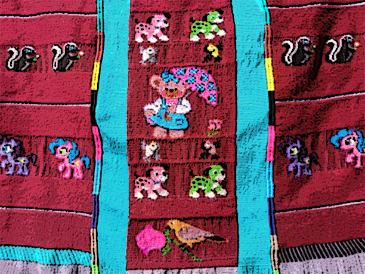

El lienzo triqui está representado principalmente por las figuras de mariposa, escaleras y la cola del pescado que simboliza la vida, abundancia, transformación y belleza de la naturaleza. Estas figuras en conjunto representan la identidad de las mujeres de San Martin Itunyoso.
Con el acceso a la tecnología se han hecho adaptaciones al tejido, logrando hacer figuras como: religiosas, caricaturas, letras y emojis.
Los colores rojo, verde, amarillo y anaranjado, sin embargo, actualmente se utilizan colores en negro, blanco, rosa, azul, morado y variantes de los colores del tejido original.
Colocar aquí el contenidopa class"Cp953186442araNTENEDORMuseo Textil de Oaxaca
Cecyteo Emsad Itunyoso
Cecyte Oaxaca